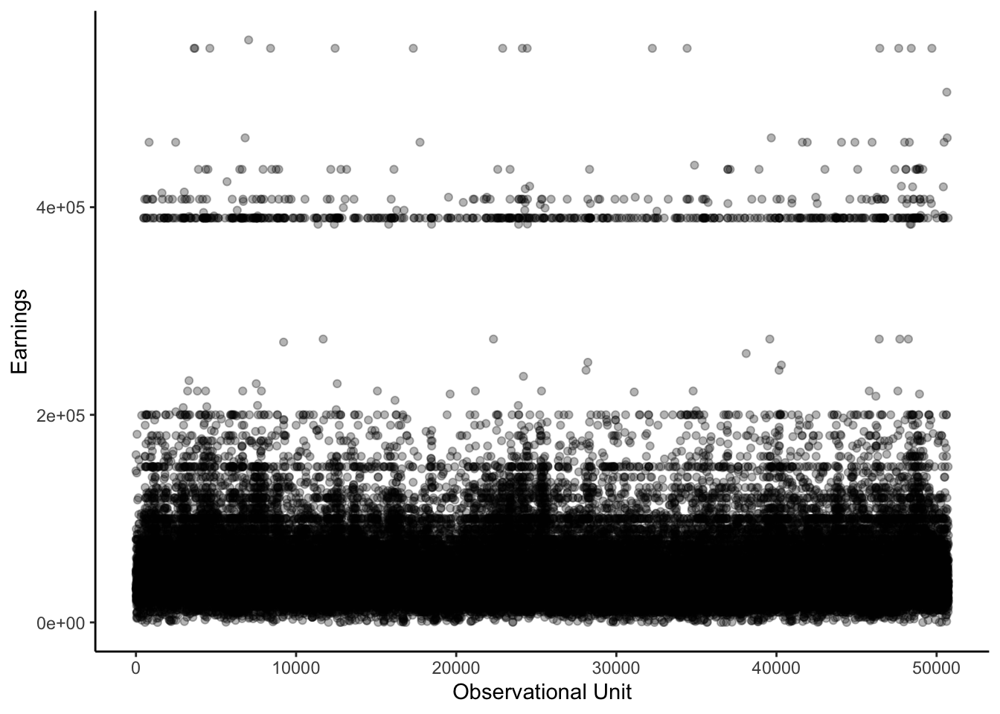
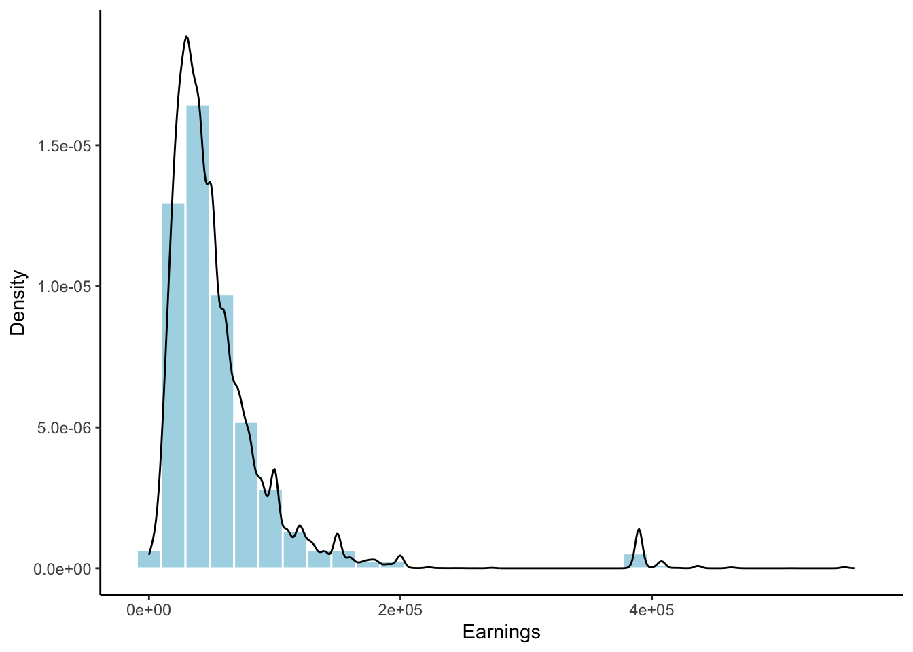
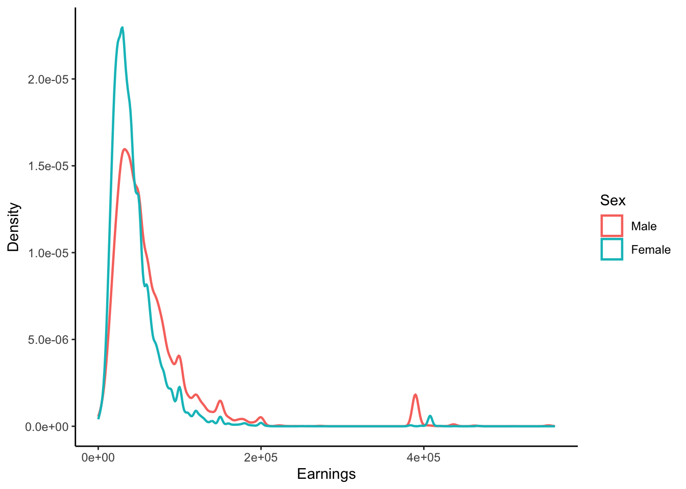
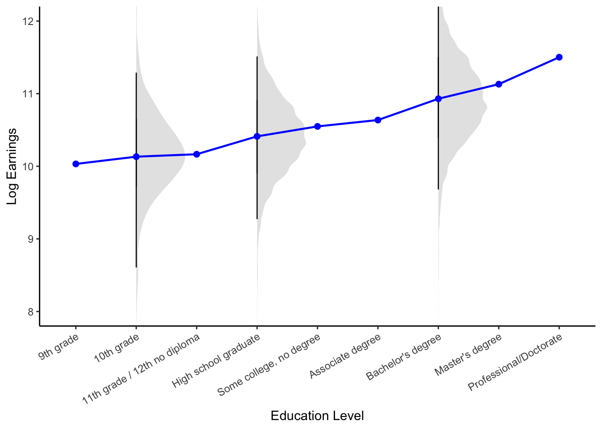

Intuition for the perspective that linear regression is the process of approximating the conditional expectation function (CEF).
Published
September 9, 2025
Motivating the Conditional Expectation Function
Finding Trends in Noise
Economic datasets record quantities that vary across observational units. For example, Figure 1 highlights the substantial variation in earnings across individuals in the March 2009 Current Population Survey (CPS). In order to mathematically characterize this variation, it is useful to view economic data as a collection of random variables generated from some underlying probability distribution. The empirical distribution of earnings in the CPS, shown in Figure 2, provides visual intuition for this abstraction.
Show code
# Read the CPS datasetcps <-read_excel(here("hasen-econometrics-datasets", "cps09mar", "cps09mar.xlsx"), col_names =TRUE)# Plot earningsggplot(cps, aes(x =seq_along(earnings), y = earnings)) +geom_point(alpha =0.3) +labs(x ="Observational Unit",y ="Earnings" ) +theme_classic()# Plot the density of earningsggplot(cps, aes(x = earnings)) +geom_histogram(aes(y =after_stat(density)),bins =30,fill ="lightblue",color ="white") +geom_density(color ="black", linewidth =0.5) +labs(x ="Earnings", y ="Density") +theme_classic()

Figure 1: Earnings Data from the March 2009 Current Population Survey (CPS).

Figure 2: Empirical Density of Earnings in the March 2009 Current Population Survey (CPS).
The variation in the data arises from a mix of observed (e.g. age) and unobserved factors (e.g. ability). We seek to satisfactorily explain the heterogeneity that arises in economic datasets. A simple first step is to stratify the data by some aggregate characteristics of the observational unit. In our example, we could plot the earnings density separately for men and women, as shown in Figure 2.
Show code
# Convert sex variable to factorcps$female <-factor(cps$female, levels =c(0, 1), labels =c("Male", "Female"))# Plot density by sexggplot(cps, aes(x = earnings, color = female)) +geom_density(linewidth =0.8) +labs(x ="Earnings", y ="Density", color ="Sex") +theme_classic()

Figure 3: Empirical Density by Sex (CPS Data)
Density functions, while informative about the overall distributional shape, are often complex and can obscure key features of variation in the data. For example, Figure 3 shows that the earnings density for men is shifted to the right relative to women. Yet the plot alone does not reveal the magnitude of this difference. An alternative way to summarize the relationship between earnings and sex is to calculate the conditional expectations:
\[
\mathbb{E}[earnings \mid sex = male] = 63,147 \quad \text{and} \quad \mathbb{E}[earnings \mid sex = female] = 44,224.
\]
The functional form of the conditional expectations is useful in summarizing the overall relationship between two variables. To see this, consider the blue line in Figure 4. By plotting the conditional expectation of log earnings by education level, this curve reduces the substantial variation of earnings at each education level — illustrated by the gray density plots — into a single point. In doing so, it reveals the systematic upward trend in log earnings as education increases.
Show code
# Map numeric education codes to readable ordered labels (once)edu_code_levels <-c(9, 10, 11, 12, 13, 14, 16, 18, 20)edu_code_labels <-c("9th grade","10th grade","11th grade / 12th no diploma","High school graduate","Some college, no degree","Associate degree","Bachelor's degree","Master's degree","Professional/Doctorate")cps <- cps %>%mutate(education_cat =factor( education,levels = edu_code_levels,labels = edu_code_labels,ordered =TRUE ) )# Lock the desired display order explicitly (prevents reordering later)edu_levels <- edu_code_labels# Keep positive earnings and build log earningscps_pos <- cps %>%filter(earnings >0, !is.na(education_cat)) %>%mutate(log_earnings =log(earnings),education_cat =factor(education_cat, levels = edu_levels, ordered =TRUE))# CEF: mean log earnings by education category (all categories)cef_data <- cps_pos %>%group_by(education_cat) %>%summarise(mean_log_earnings =mean(log_earnings), .groups ="drop") %>%mutate(education_cat =factor(education_cat, levels = edu_levels, ordered =TRUE))# Choose categories where you want the half-violinsselected_levels <-c("10th grade", "High school graduate", "Bachelor's degree")violin_data <- cps_pos %>%filter(education_cat %in% selected_levels) %>%mutate(education_cat =factor(education_cat, levels = edu_levels, ordered =TRUE))# ---- Plot: keep your original look, overlay left half-violins on selected levels ----ggplot() + ggdist::stat_halfeye(data = violin_data,aes(x = education_cat, y = log_earnings),side ="right",normalize ="groups",width =0.9,slab_alpha =0.35,slab_fill ="grey70",slab_color =NA,interval_size =0,point_size =0 ) +geom_line(data = cef_data,aes(x = education_cat, y = mean_log_earnings, group =1),color ="blue", linewidth =0.8 ) +geom_point(data = cef_data,aes(x = education_cat, y = mean_log_earnings),color ="blue", size =2 ) +scale_x_discrete(limits = edu_levels, drop =FALSE) +scale_y_continuous() +coord_cartesian(ylim =c(8, 12)) +labs(x ="Education Level", y ="Log Earnings") +theme_classic() +theme(axis.text.x =element_text(angle =30, hjust =1))

Figure 4: Conditional Expectation of Log Earnings Given Education Level (CPS Data)
More generally, we can summarize the relationship between an outcome\(Y\) and a set of regressors\(X = (X_1, \ldots, X_K)\) with the conditional expectation function (CEF)\[
m(X) = \mathbb{E}[Y \mid X].
\tag{1}\]
Optimal Predictor
The heterogeneity in economic outcomes naturally motivates a prediction problem: given a random vector \(X\) of regressors, what function \(g(X)\) provides the best prediction of the outcome \(Y\)? One way to define “best” is to choose the function that minimizes the mean squared error (MSE):
As it turns out, the CEF is the solution to this problem! In other words, the CEF is the best predictor of \(Y\) given \(X\) in the sense that it minimizes the mean squared error between the predictions and the actual outcomes.
To see this, we need to first define the error term as the difference between the outcome and the CEF
\[
e := Y - m(X).
\]
This allows us to decompose the outcome variable as
\[
Y = m(X) + e,
\tag{3}\]
where \(m(X)\) is the systematic component of \(Y\) — the part that can be explained by \(X\) on average — and \(e\) is the remaining idiosyncratic variation in \(Y\).
Since the error is defined as a function of the outcome and regressors, it is also a random variable. Moreover, we can show that its distribution has two key properties. First, by construction, the error has zero conditional mean:
Second, the error is uncorrelated with any function of the regressors:
\[
\mathbb{E}\big[h(X) e \big] \overset{(a)}{=} \mathbb{E}\big[\mathbb{E}[h(X) e | X]\big] \overset{(b)}{=} \mathbb{E}\big[h(X) \mathbb{E}[e | X]\big] \overset{(c)}{=} 0,
\tag{5}\] where \((a)\) uses the law of iterated expectations, \((b)\) uses the linearity of expectations \((c)\) applies Equation 4.
Now notice that for any function \(g(X)\), we have
\[
\begin{aligned}
\mathbb{E}\big[\big(Y - g(X)\big)^2\big] &= \mathbb{E}\big[\big(e + m(X) - g(X)\big)^2\big] \\
&= \mathbb{E}\big[e^2\big] + 2\mathbb{E}\big[e\big(m(X) - g(X)\big)\big] + \mathbb{E}\big[\big(m(X) - g(X)\big)^2\big] \\
&= \mathbb{E}\big[e^2\big] + \mathbb{E}\big[\big(m(X) - g(X)\big)^2\big] \\
&\geq \mathbb{E}\big[e^2\big] \\
&= \mathbb{E}\big[\big(Y - m(X)\big)^2\big],
\end{aligned}
\] where the third equality follows from Equation 5. In words, the mean squared error of any predictor \(g(X)\) is always at least as large as the mean squared error of the CEF \(m(X)\). Thus, we have shown that the CEF is indeed the solution to Equation 2.
Best Linear Predictor and Regression
TODO: NEED TO RE-WRITE EVERYTHING BELOW.
In most empirical cases, however, the functional form of the CEF is unknown. Thus, it is more practical to model the relationship between the outcome and covariates using a simpler function. One option is to find a linear approximation of the CEF, which takes the form
\[
\ell(x_i) = \beta_0 + \beta_1 x_{1i} + \beta_2 x_{2i} + \ldots + \beta_k x_{ki} = x_i^T\beta,
\tag{6}\] where \(x_i^T = (1, x_{1i}, x_{2i}, \ldots, x_{ki})\). Note that the word “linear” here refers to the simplifying assumption that the function is a linear combination of the covariates.
How do we choose the specific form of our approximating linear function? Since we want our predictions to minimize the MSE function, we set the parameters in Equation 6 as
is often called the “linear regression of \(Y\) on \(X\)” by economists. This simply refers to the process of finding the best linear predictor of \(Y_i\) given some realized values of \(X_i\) by minimizing the mean squared error function.
Linear Regression Can (Sometimes) Recover True Conditional Averages
So far, we have discussed linear regression as a tool to approximate the conditional expectation function. However, it can be shown that when the CEF is itself linear, the best linear predictor exactly equals the CEF. That is to say linear regression recovers the true conditional averages in this case.1
To see this in practice, I simulate data on income using the following equation
set.seed(123)# Population size n <-1000# Noise noise <-rnorm(n, 0, 2000)# Covariates male <-rbinom(n, 1, 0.5)sex <-factor(male, labels =c("Female", "Male"))white <-rbinom(n, 1, 0.7)race <-factor(white, labels =c("Black", "White"))literacy <-runif(n, 0, 100)# Outcome white_female_base <-30000# white females with 0 literacy earn 30000literacy_effect <-50male_premium <-200# + 200 male premium white_premium <-1500# + 1500 white premiumwhite_male_premium <-1000# + 1000 white male premium # Create income income <- white_female_base + white_premium * white + male_premium * male + literacy_effect * (literacy^(1+0.3* male)) +# literate males are better off than literate females white_male_premium * (male * white) + noise# Combine into a datasetsim_data <-data.frame(sex = sex,race = race, literacy, income)
A Simple Univariate Example
Recall from Equation 1 that the CEF is a function of the covariates we use to predict the outcome variable. So, as a simple example of a linear CEF, let us consider the conditional expectation of \(income_i\) as a function of \(male_i\). The conditional expectation can be written as the step-wise function \[
\mathbb{E}[Y_i|male_i] = \begin{cases} \mu_0 \quad \text{if} \quad male_i = 0 \\ \mu_1 \quad \text{if} \quad male_i = 1 \end{cases}.
\tag{7}\] To illustrate that Equation 7 is a linear combination of \(male_i\), we can rewrite it as
To verify that the linear regression above does in fact recover Equation 8, we need to check that (i) its intercept parameter equals the average income of females in the dataset and (ii) the coefficient on \(male_i\) is the difference in the average income of males and females in the dataset. As shown below, this is indeed the case.
The exercise of transforming the step-wise function in Equation 7 into a linear combination of the covariate in Equation 8 provides an important insight. It turns out that we can perform a similar transformation for any CEF where the covariates are discrete variables that take on a finite set of values.
TODO: Add example of sex x race. Talk about main effect and interaction.
In general, the idea is to include a separate parameter for each possible value of the discrete covariates. The linear regression corresponding to such a CEF is said to be saturated.
TODO: Saturated models makes inference easier: give example of comparing means.
Footnotes
Again, to abstract away from statistical inference, I do not distinguish between population and sample averages. In practice, however, it is important to note that linear regression recovers sample conditional averages rather than the “true” population conditional averages when the CEF is linear.↩︎